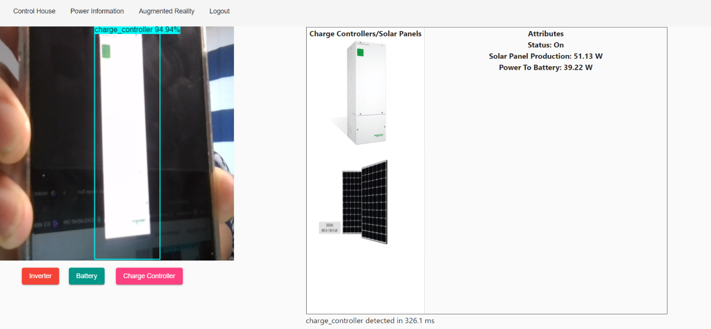
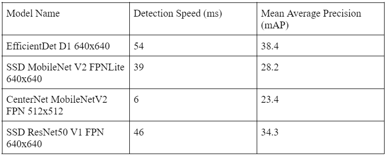
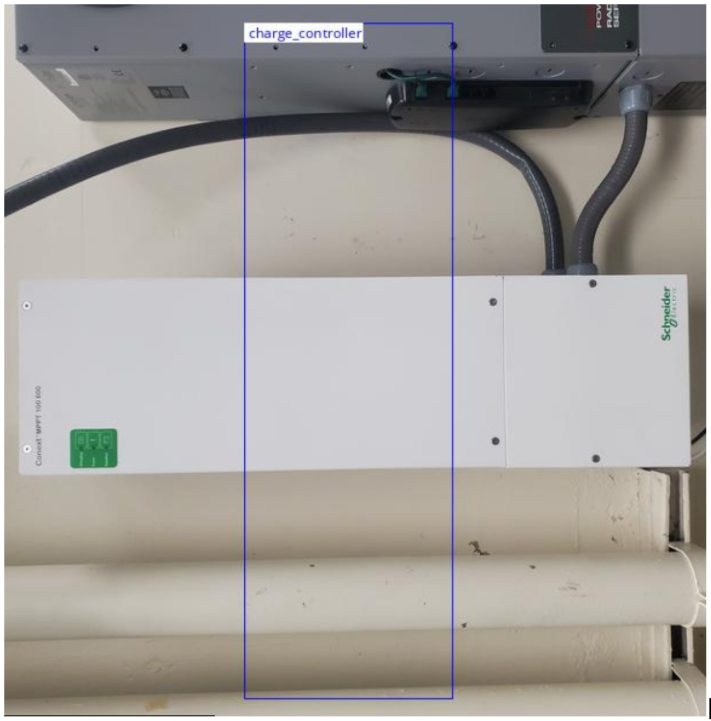
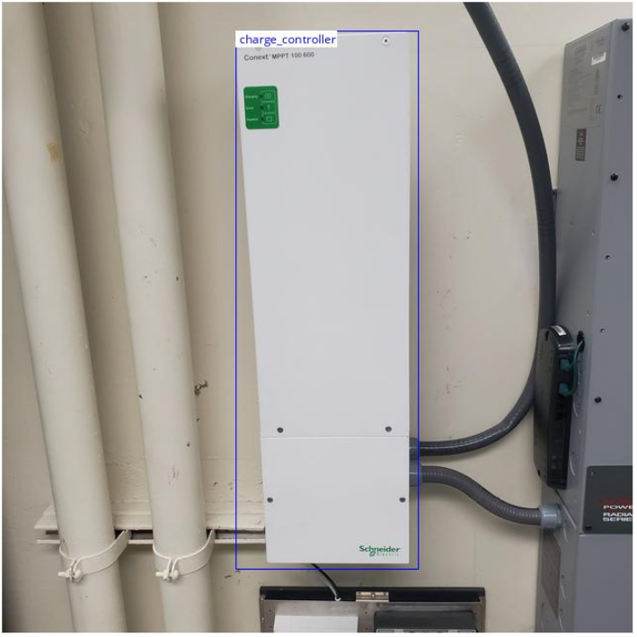
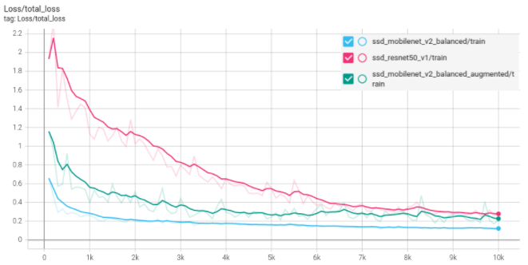
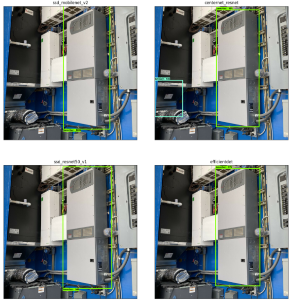
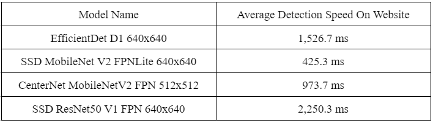
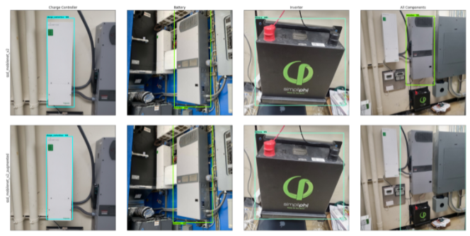
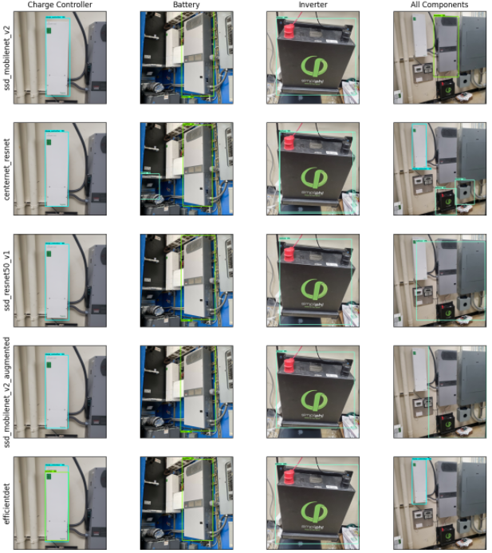

John Alcantara, Alex Sablan, Matthew
Trang Fall 2021 ECE 4554/5554 Computer Vision: Course
Project Virginia Tech
Abstract
In this project, we propose the usage of transfer learning to create an accurate object detection classification
system for
components of a smart home, specifically the FutureHAUS, which is an innovative modular designed building, built
for the Solar Decathlon
Middle East Competition. We were able to successfully train accurate classifiers using the Tensorflow Transfer
Learning API, and were able
to successfully create and demonstrate the usage of these classifiers in an
augmented reality web application, and show changes being made to a “smart home”, simulated on an Arduino.

Problem Statement
The FutureHAUS is an innovative modular designed building that won first place in the Solar Decathlon Middle East
Competition in 2018.
To commemorate its achievements, we want to provide the FutureHAUS with an augmented reality application that
displays information and
detects its electrical components: which are the inverter, battery, solar panels, and charge controllers. The goal
of our project is to
create an accurate image detection classification system for the components, and use the model to simulate a smart
home application.
Approach
We first gathered a dataset of images of the devices, specifically, an inverter, charge controller, and battery.
The dataset we used is one that we collect ourselves by taking pictures of the devices using a mobile camera. We
took approximately 25 photos of each device from varying angles and distances, to create enough variance in each
photo. After collecting all the images, we downscaled the images to 640 pixels by 640 pixels, to facilitate the
learning process. We wrote code to mass convert files to the same picture format and rename them to make
processing easier. Then, we used the LabelImg tool to generate bounding boxes for each of the components that we
were testing for, and export these bounding boxes as XML files in the PASCAL VOC format. [4]
We used Tensorflow to train an object detection classifier for the devices that we want to control. Specifically,
we used Tensorflow’s Transfer Learning API to modify an existing classifier, such as a MobileNet, or a ResNet,
that has been trained on the COCO dataset. The Tensorflow Transfer Learning API has a variety of tutorials that we
used code from in order to perform the training, with alterations made for our specific training pipeline and
dataset. [1]. We also used code from online Tensorflow tutorials and edited them to suit our specific purpose, the
tutorials we used can be found at [2] and [3]. After training, we tested the accuracy of the different models, and
compared the results to select the best one for our augmented reality web application. The transfer learned models
are pre-trained on the COCO 2017 dataset. The models that we tested are as follows: CenterNet MobileNetV2 FPN
512x512, SSD MobileNet V2 FPNLite 640x640, SSD ResNet50 V1 FPN 640x640, and EfficientDet D1 640x640 from the
Tensorflow 2 Detection Model Zoo [5]. These models are readily available on GitHub from Tensorflow.
The detection speed and mean average precision (mAP) values for the models we used are as follows. A lower
detection speed means that the classification will be performed faster, which will result in more frequent
detections that are better able to keep up with a moving camera. A higher mean average precision means that the
model is better at accurately classifying objects. These results were gathered on the COCO-17 dataset by
Tensorflow. We chose this selection of models because they are the ones which output bounding boxes, and have a
good range of detection speeds and precisions to compare.

Then, after training a custom detection model and exporting it to a saved model, we converted it to a web model
using Tensorflow.JS. Tensorflow.JS is a library written by Tensorflow that allows users to use Machine Learning
Models directly in the browser, meaning we could embed our trained model into the web application. We also used
JavaScript and Angular.JS to create the Augmented Reality Interface in the web application. To control the
simulated FutureHAUS components, we plan to use MQTT (Message Queue Telemetry Transport) to send and receive
formatted data to the application so it knows which component to control. The smart home application is simulated
using an Arduino, breadboard, and three different color LEDs. Each LED signifies one of the three FutureHAUS
components. Once it receives a command from the MQTT broker, then one of the LEDs lights up, meaning that an
action has been received.
We ran into a number of obstacles during this process. At first, when training the custom object detector, we were
unable to get a resulting classifier that functioned properly. The classifier would misclassify white space as
devices and would struggle to detect the actual devices. After debugging, we found that this was due to an error
in the LabelImg program where portrait images are treated as landscape images, which was unnoticed by us since our
photos are square resolutions. The result was misplaced bounding boxes, such as the one below, which we were able
to discover by running the TFRecord Viewer program found on GitHub. [6]

After discovering this error, we rotated the images that were incorrectly bound and relabeled them, resulting in
proper bounding boxes such as the following. With correctly labeled data, our models were successfully able to
perform object detection.

The hardware simply acts as an indication of what the model identifies in the picture
Experiments and results
To test the code, we will utilize a laptop camera along with the algorithm to identify the three main FutureHAUS
components, which are the battery, inverter, and charge controllers. The idea is to use an arduino and a
breadboard to mimic controlling the components using an LED. For example, if we wanted to check information about
the inverter, we would point the camera at the inverter. Once the inverter is identified, a list of information
about the inverter will display on the screen such as the current, inverter power, etc. To create the machine
learning algorithm, we will use the TensorFlow library. To host the website we will use Angular. MQTT will be used
to send data between the arduino and the website.
The trials should reveal that the algorithm can correctly identify one of the three FutureHAUS components. A
successful project will consist of a smart home application that loads a custom object identifier with a minimum
of 90% accuracy, and sends data correctly to configure house objects.
Training
For training the classifier, we used a 90% train, 10% test split. In total, we had 69 photos in our training set,
and 8 photos in our testing set. There were around 25 images of each of the three components, in order to ensure
that each component is trained on equally. We used Tensorboard logs to keep track of training, and document which
model was performing well based on training loss.
The models were trained for 10,000 steps with batch sizes of 2. We chose 10,000 steps as it was generally enough
to ensure an accurately trained classifier, and at this amount of training, the loss tended to level out. The
batch size of 2 was chosen as it was the maximum amount we could store in memory on our computers. With more
training steps, it is expected that the loss decreases slightly by the end, or stays constant. With a larger batch
size, it is expected that the training would converge faster, and reach the same value for loss in a lesser amount
of steps.
We found that the results of the loss matched our results from testing on output images. In the following graph,
the total loss for three of the models can be seen throughout training, and at step 10,000, it can be seen that
the model that transfer learned from the SSD_MobileNet resulted in the lowest total loss of 0.122 compared to 0.22
for the SSD_MobileNet instance trained with various image augmentation techniques, and 0.27 for the SSD_ResNet50
model. These results are consistent with the results acquired by running the models on the testing dataset and
seeing what the output bounding boxes are.

In this figure you can see the four different models outputting bounding boxes for an input image of an inverter.
The confidence value for each classifier can be seen in the label box. The SSD MobileNet V2 correctly identified
the inverter with 100% confidence. The CenterNet_ResNet model identified the inverter with 75% confidence, and
also incorrectly placed a bounding box for the battery on a sheet of metal. The SSD ResNet50 V1 model classified
it with 90% confidence. Finally, the EfficientDet model was able to detect the inverter with 97% accuracy. Thus,
the SSD MobileNet V2 was the most effective model.

Speed detection is important for mobile applications, which has less overall performance than computers. The
figure below shows how each custom model performs when loaded into the angular website. The times were calculated
by averaging the first three detection times when detecting an inverter image. From our results, the SSD MobileNet
V2 detected objects the fastest compared to the other three models. Thus, we selected the SSD MobileNet V2 as our
model for the web application.

Augmentation techniques
We then tested the effects of training a classifier with different data augmentation techniques. We applied the
following augmentations to the input data:
Random Scale Crop and Pad
Normalize Image
Random Horizontal Flip
Random Vertical Flip
Random Rotation of 90 degrees
Random Pixel Value Scale
Random Image Scale
Random RGB to Grayscale
Random Adjustment of Brightness
Random Adjustment of Contrast
Random Adjustment of Hue
Random Adjustment of Saturation
Random Distortion of Color
Random Jitter of the Bounding Boxes
Random Cropping of the Images
The resulting classifier was less accurate than the SSD_MobileNet_V2 model that was trained without the image
augmentation. The confidence in predictions for the charge controller and inverter were down significantly
compared to that of the one without augmentations. Additionally, in the all components test, the augmented model
placed a bounding box around the entire right side of the image for the battery, which was incorrect. It is
possible that we used too many different augmentation techniques, which made it more difficult for the classifier
to converge. In the future, additional testing could be done to test for a longer amount of time to see if
additional training would solve the issue, or with smaller combinations of the chosen augmentations.

Qualitative Results
The figure below shows each model's performance with detecting images with one of each component, and then a final
image of all the components.

The video below is a demo of the custom model loaded into the angular website, and detecting the components.
The video below shows the smart home simulation using an arduino and LEDs.
Conclusion
In summary, we used various existing object detection models for transfer learning of our custom object detection
model for FutureHAUS electrical components, and compared their performance based on accuracy and speed. We found
that the SSD MobileNet V2 model had the best performance out of the four models with an average detection time of
425.3 ms and a 100% confidence when detecting the inverter. This custom model will be loaded into an angular
server that loads a camera and uses the model to detect the components, and also displays information about the
detected components. An arduino is used to simulate a smart home application that reads commands from the website
and simulates actions based on LEDs. To make our approach better we could have trained the model longer, since we
had limited the training to 10,000 steps for ease of comparison. We could have also taken more angled pictures of
the components.
Code
Visit https://github.com/alcan2jc/alcan2jc.github.io/ to check out the code and model used for the detection.
References
L. Vladimirov, “Tensorflow 2 object detection API tutorial¶,” TensorFlow 2 Object Detection API tutorial
-
TensorFlow 2 Object Detection API tutorial documentation. [Online]. Available:
https://tensorflow-object-detection-api-tutorial.readthedocs.io/en/latest/index.html. [Accessed: 01-Dec-2021].
M. Tanonwong, “Custom object detection using tensorflow in google colab,” Medium, 08-Jul-2020. [Online].
Available:
https://medium.com/@matus.tanon/custom-object-detection-using-tensorflow-in-google-colab-e4d6e1a17f18.
[Accessed: 01-Dec-2021].
H. Zanini, “Custom object detection in the browser using Tensorflow.js,” The TensorFlow Blog, 02-Jan-2021.
[Online]. Available: https://blog.tensorflow.org/2021/01/custom-object-detection-in-browser.html. [Accessed:
02-Dec-2021].
Tzutalin, “Tzutalin/labelimg: 🖍️ LabelImg is a graphical image annotation tool and label object bounding
boxes in images,” GitHub. [Online]. Available: https://github.com/tzutalin/labelImg. [Accessed: 03-Dec-2021].